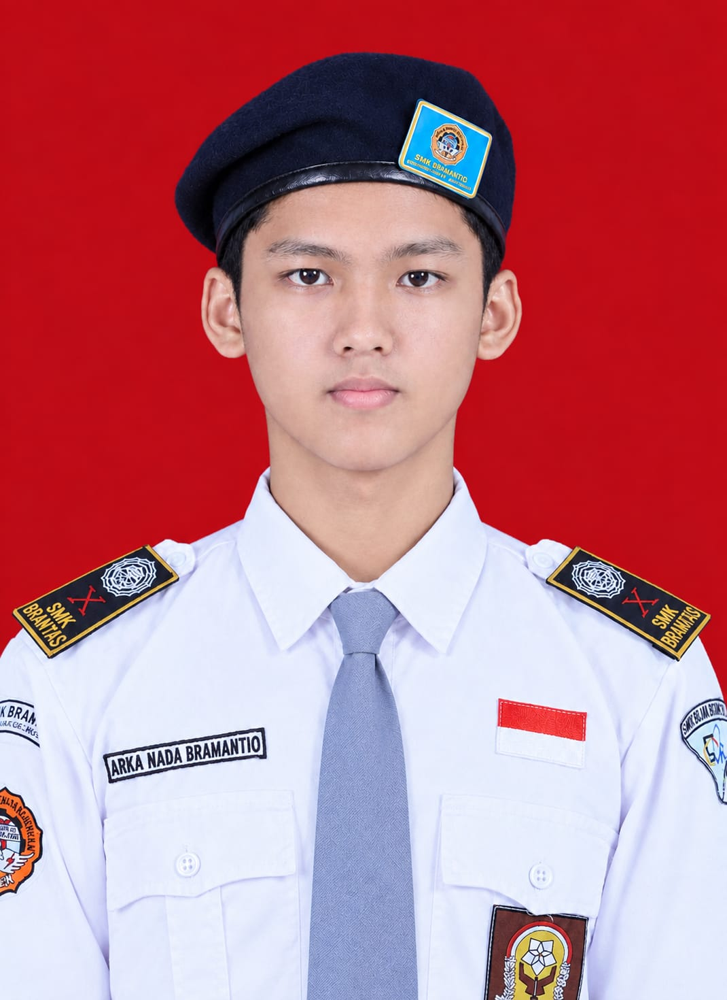

Foto prestasi SMP
Jenjang SMP
Prestasi akan ditambahkan
Tambahkan nama penghargaan, tahun, dan cerita singkat tentang prestasi SMP di sini.
Memuat Profil Arka Nada

Siswa RPL | SMKS Brantas Karangkates
Saya adalah siswa Rekayasa Perangkat Lunak yang memiliki rasa ingin tahu tinggi terhadap dunia teknologi. Saya senang belajar bagaimana sebuah ide bisa diwujudkan menjadi sesuatu yang bermanfaat.
Bagi saya, coding bukan sekadar mengetik baris perintah, tetapi juga cara untuk berpikir kritis, berlatih disiplin, dan menyelesaikan masalah. Saya terus mengembangkan kemampuan dan pengalaman untuk meraih cita-cita di bidang teknologi.
Lihat Prestasi ↓Perjalanan dan pencapaian
Prestasi dikelompokkan berdasarkan jenjang sekolah. Kartu berikut adalah tempat untuk menambahkan foto dan cerita prestasi yang sebenarnya.
Jenjang SMP
Tambahkan nama penghargaan, tahun, dan cerita singkat tentang prestasi SMP di sini.
Jenjang SMK
Tambahkan nama penghargaan, tahun, dan cerita singkat tentang prestasi SMK di sini.